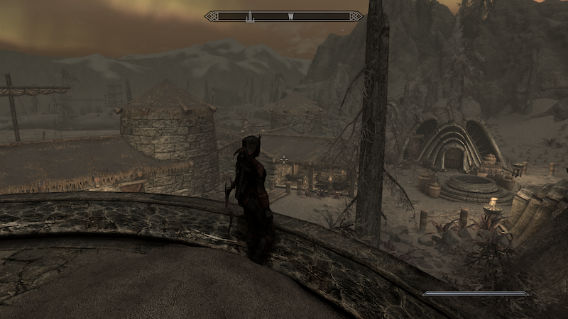

Bethesda expanded upon the main story by adding two more expansion packs that were purchasable in addition to the main game. Dawnguard and Dragonborn were released in 2012 for PC, Xbox360 and later for PS3. In the Dawnguard expansion you join a group of Vampire hunters known as the Dawnguard who are at war with Clan Volhikar, a group of ancient Vampires. This expansion was memorable for giving you the ability to turn into a Vampire Lord yourself which gave you access to a host of new abilities as well as a menacing new look.
Dragonborn takes your character to the island of Solstheim, an area that was last seen in the third expansion Morrowind . It is the home of the Dark Elves who have a unique design to their towns and armor. Solstheim itself contrasts sharply to the frozen forests of Skyrim. The land is covered in giant mushrooms and caves. The villain of this story is the sorcerer Miraak . Miraak claims to be the true dragonborn and sends his cult followers to assassinate you in Skyrim. This expansion gives the player a new story to fight through, as well as the ability to ride dragons.